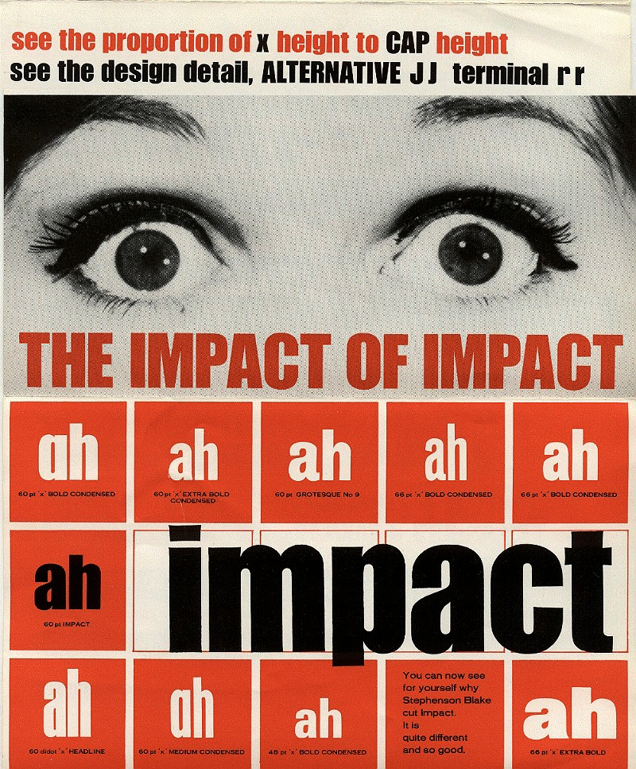

Impact is an industrial/grotesk sans serif that was designed in 1965 by Geoffrey Lee. It is synonymous with internet culture, in particular the text based memes of the 2010s. Since I started coding, I have found a new love and appreciation for this typeface, which comes preloaded into the html language. For example, try googling 'impact typeface' right now. It changes all the text in your browser to impact (note: this also works with comic sans and a bunch of other typefaces!)
I know that it is not necessarily the sexiest font, but I really do think it's charming! Impact has a really low contrast, a super heavy line weight, narrow tracking, high x-height, and short ascenders and descenders. I love all of these features, because they make it a very economical typeface, in terms of the space it takes up, and also because combined they really do create a big loud 'IMPACT'! It does exactly what it says on the tin.
click here to learn more

